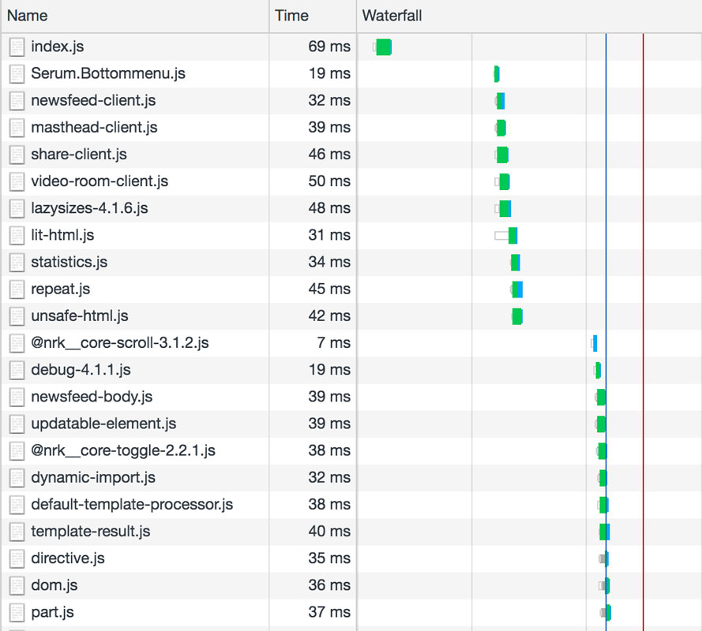

Back-Office
Front-Office
We are very fond of cute code names here at NRK
This is Kurator. It has two components: Back-Office is the application Journalists use to edit content, and Front-Office is the application that renders that content for the web
house floor room guestroom - newsfeed
Front-Office is further divided into multiple parts
This is a house
This is a floor in that house
This is a room in that floor
And this is a guestroom called newsfeed
Previous
Next
Last summer I asked Kristoffer, who was tech lead for Kurator at the time, if we could rewrite Front-Office. He said yes, as long as it looked exactly like the existing version
Six months later, we have two versions of Front-Office: Previous and Next
Previous
Next
If we compare a pixel from Previous and one from Next, they look the same
But if a user gets that pixel sooner, are they really the same?
And if a user wants a blue version of that pixel...
...or purple...
...or green...
...then they really aren't the same at all
Performance is a feature
This was the real motivation for the rewrite: improve render performance in order to be able to offer customized content
Performance is hard to observe directly, but it can enable other more visible features, and we wanted to open up for delivering personalised content on nrk.no
"reducing complexity is the most important element of software design"
"the greatest limitation in writing software is our ability to understand the systems we are creating"
"developers [...] should always be on the lookout for opportunities to improve the design of the system"
"developers should always be thinking about complexity"
#1 Configuration
{
"api": {
"cacheMaxSize": 1000,
"maxAgeFeed": "1m",
"maxAgeImmutable": "24h",
"maxAgeMutable": "1s",
"origin": "${__SUPPLIED_BY_ENV__}",
"pathnames": {
"blueprint": "/houses/${id}/ids",
"house": "/houses/${itemId}/${id}",
"feed": "/${type}/houses/${houseId}",
"floor": "/floors/${itemId}/${id}",
"room": "/rooms/${itemId}/${id}"
},
"retry": "${__SUPPLIED_BY_ENV__}",
"secretKey": "${API_SECRET}",
"timeout": "${__SUPPLIED_BY_ENV__}",
"urls": "**generated at runtime**"
}
}
/config
**files here are added by runtime env**.txt
**files here are loaded in sort order**.txt
local.json
import config from '@nrk/frontend-common/config.js';
const houseEndpoint = config.get('api.urls.house');
// => https://kurator-api-stage.nrk.no/houses/${itemId}/${id}
const apartmentEndpoint = config.get('api.urls.apartment');
// => Boom! Error: no config value found for "api.urls.apartment"
{
"NODE_ENV": {
"test": {
"api": {
"origin": "http://localhost:8080"
}
},
"production": {
"api": {
"origin": "https://kurator-api.nrk.no"
}
}
}
}
One of the most important goals of good design is for a system to be obvious
One place where being obvious is important is application configuration
Our new config setup describes all configuration options in one place (config.json), and is explicit about which values must be supplied by the runtime environment
Environment values are loaded from the /config directory, which can be populated using Kubernetes ConfigMaps
During runtime, any missing environment variables will throw and cause the application to crash, preventing rollout
Reading non-existant values will also throw an error. Obvious errors are simpler to fix than hidden ones
Another benefit of being explicit is that the application has no concept of environment, only configuration, which is also much simpler
#2 Development Environment
terminal video
Previous
terminal video
Next
require = require('esm')(module, { mainFields: ['module', 'main'] });
module.exports = require('./src/server/index.js').default();
kurator-front-office-next $ npm run dev:mock
> kurator-front-office-next@1.0.0 dev /Users/alex/PROJECTS/NRK/kurator-front-office-next
> dvlp --transpiler ./scripts/transpile.js --mock ./mock ./index-dev.js
✔ loaded transpiler from scripts/transpile.js
✔ loaded 1 mock response from mock/bottom-menu.mock.json
✔ loaded 5 mock responses from mock/elglobo.mock.json
✔ loaded 4 mock responses from mock/floor-29-26.mock.json
✔ loaded 2 mock responses from mock/guestroom-133-7.mock.json
✔ loaded 127 mock responses from mock/house-12.mock.json
✔ loaded 136 mock responses from mock/house-2-900.mock.json
✔ loaded 45 mock responses from mock/house-5.mock.json
✔ loaded 144 mock responses from mock/house-uu.mock.json
✔ loaded 2 mock responses from mock/newsfeed.mock.json
✔ loaded 2 mock responses from mock/rss.mock.json
✔ loaded 1 mock response from mock/videoroom-289-288.mock.json
💥 serving ./index-dev.js at http://localhost:3000
👀 watching for changes...
const api = await testServer({ autorespond: false, latency: 0, 8080 });
api.mocks.add('http://localhost:8080/houses/2/ids', {
error: true,
body: {}
});
const app = await application();
const res = await app.inject({
method: 'GET',
url: 'http://localhost:3000'
});
expect(res.statusCode).to.equal(500);
Probably the biggest differnce between Previous and Next is the development environment
Previous used Nodemon to restart the application server, Babel to transpile server code, and Webpack to compile assets for the browser
This type of tooling chain is complex to set up, slow to restart after changes, and requires special server middleware to be used, forcing the application to be aware of it's environment
Next uses dvlp to restart the application server, esm to enable es modules for server code, and no asset compiler (except Sass)
Most importantly, however, is that the application itself is totally unaware it's running in development. There is no difference between development and production code beyond configuration
With dvlp we also get easy mocking during runtime and testing
#3 ES Modules

<head>
<link rel="preload" href="index.mjs" as="script">
<script>
window.cutsTheMustard = testDOMProp('visibilityState', document);
if (window.Reflect == null) {
loadScript('es6-polyfill.js', { async: false, defer: false });
}
if (!('customElements' in window)) {
loadScript('dom-polyfill.js', { async: false, defer: false });
}
</script>
<script>
loadScript('index.mjs', { async: false, defer: false, module: true });
</script>
<script nomodule>
loadScript(window.cutsTheMustard ? 'index.js' : 'index-legacy.js',
{ async: false, defer: false }
);
</script>
</head>
The most important development principle is that Next treats bundling as a production optimization, like minification
During development, js files are loaded by the browser via standard es module import syntax
We write idiomatic JavaScript, and dvlp handles resolving bare imports behind the scenes
In production, server and client code is bundled with Rollup.js
Client code is bundled twice to allow for serving different code to different browsers
This so-called differential bundling allows newer browsers to load untranspiled es6 code (async/await, classes, etc), and older browsers transpiled es5 code
#4 Tagged Template Literals
import Head from './head.js';
import House from './house.js';
import { html } from '@popeindustries/lit-html-server';
/**
* Layout template
* @param {object} data
* @param {RenderContext} context
* @returns {TemplateResult}
*/
function layout(data, context) {
return html`
<!DOCTYPE html>
<html lang="nb-NO">
${Head(data, context)}
<body class="kur-house">
${House(data, context)}
</body>
</html>
`;
}
import Floor from './floor.js';
import { getHouse } from './api-agent.js';
import { html } from '@popeindustries/lit-html-server';
/**
* House component
* @param {object} data
* @param {RenderContext} context
* @returns {Promise<TemplateResult|undefined>}
*/
export default async function House(data, context) {
const { floors } = await getHouse(data.houseId);
return html`
<main>
${floors.map((floor) => Floor(floor, context))}
</main>
`;
}
For rendering markup, Next uses lit-html's template literal syntax (instead of React)
Template literals are a native JavaScript syntax for performing custom string interpolation
lit-html adds some sugar for handling attributes, and various helper functions called directives
#5 Streaming Renderer
import { createServer } from 'http';
import { renderToStream } from '@popeindustries/lit-html-server';
import template from './template.js';
createServer((req, res) => {
res.writeHead(200);
renderToStream(template()).pipe(res);
}).listen(3000);
import { handleError } from './error.js';
import { renderToStream, renderToString } from '@popeindustries/lit-html-server';
import template from './template.js';
app.get('/', async (request, reply) => {
let markup;
try {
if (request.isBot) {
markup = await renderToString(template());
} else {
markup = renderToStream(template());
markup.on('error', handleError);
}
} catch (err) {
return handleError(err);
}
reply.type('text/html').code(200).send(markup);
})


 house
floor
room
guestroom - newsfeed
house
floor
room
guestroom - newsfeed